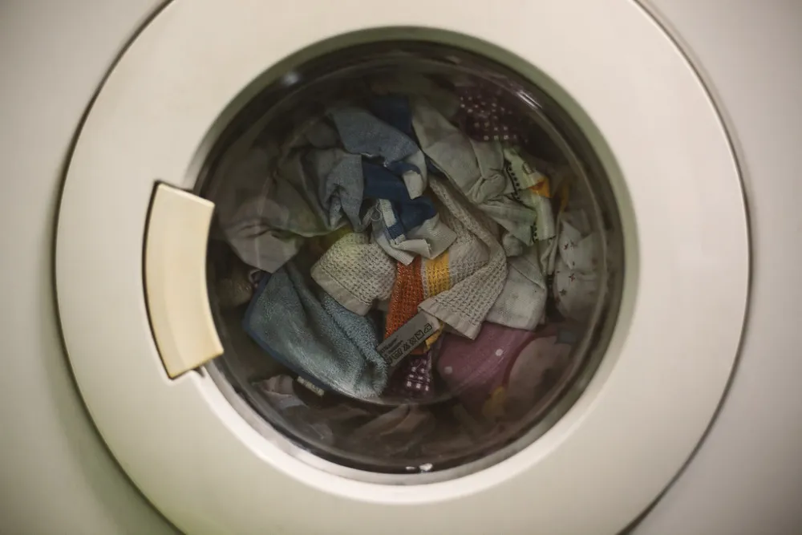

Électroménager
Diagnostiquer et dépanner · 8 guides vérifiés, pas à pas.

Remplacer la courroie d'un lave-linge
Le moteur tourne mais pas le tambour ? La courroie est sans doute usée ou sortie de sa poulie.
Lave-linge qui ne vidange plus
Dans la majorité des cas, un simple nettoyage du filtre de vidange suffit.
Lave-vaisselle qui lave mal
Vaisselle encore sale ou mauvaises odeurs ? Filtre encrassé et bras bouchés sont presque toujours en cause.
Réfrigérateur qui givre : vérifier le joint
Du givre qui revient sans cesse ? Un joint de porte qui fuit laisse entrer l'air chaud et humide.
Aspirateur qui n'aspire plus
Avant d'en racheter un, vérifiez les trois coupables : sac ou bac plein, filtres encrassés, tuyau bouché.
Détartrer une cafetière filtre
Café tiède, qui coule lentement ? Le calcaire bouche la cafetière. Voici la méthode indiquée par les fabricants de cafetières filtre.
Lave-linge qui ne démarre plus
Avant d'appeler un dépanneur, cinq vérifications simples règlent une grande partie des pannes de démarrage.
Remplacer la sécurité de porte d'un lave-linge
La porte ne se verrouille plus et la machine refuse de démarrer ? La sécurité de porte, un petit boîtier électrique, se remplace sans démonter la machine.